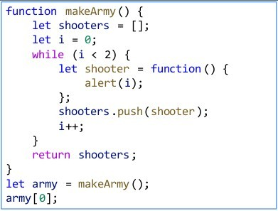
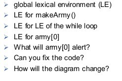
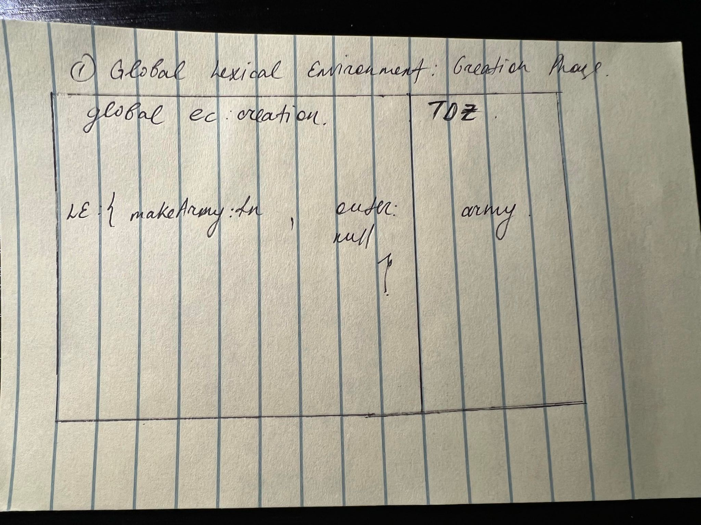
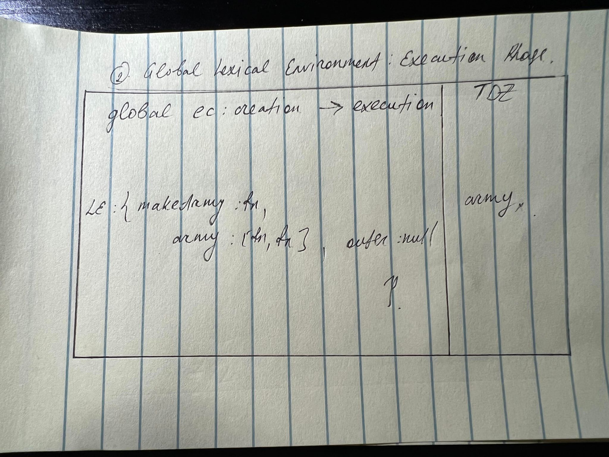
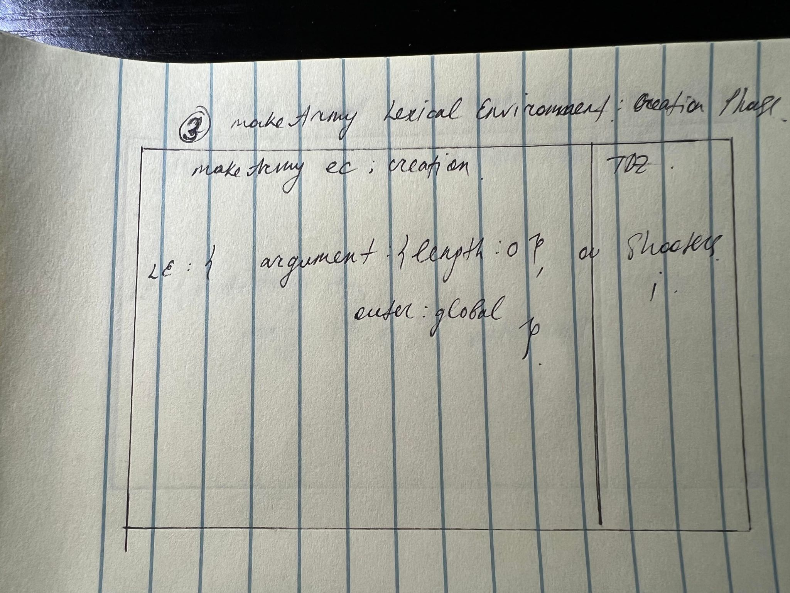
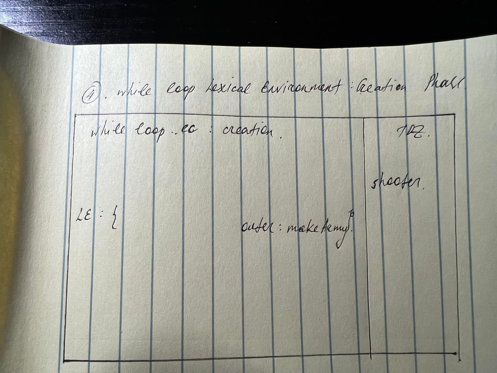

Homework Assignment 6
1. Draw a lexical environment diagram for the below code and show






- What will army[0] get?
Answer: it will alert nothing because not call the method
- How to fix? : by calling like this army[0]();
2. Write a function printNumbers (from, to) that outputs a number every second, starting from from and ending
with to.
3. In the code below there is a setTimeout call scheduled, then a heavy calculation is run, that takes more
than 100ms to finish.
- When whill the scheduled function run?
- After the loop.
- Before the loop.
- In the begining of the loop.
- What is alert going to show ?